payroll-webinar-loop-autoplay FAIL 0
apps vlc
The payroll webinar clips in my Videos folder should play start to finish, then repeat, unattended in VLC.
task config + evaluator
{
"config": [
{
"type": "execute",
"parameters": {
"command": "mkdir -p /home/user/videos && python3 -c \"\nimport subprocess\nclips=[('01_payroll_tax_updates',6),('02_direct_deposit_setup',5),('03_q3_expense_reimbursements',7)]\nfor name,dur in clips:\n subprocess.run(['ffmpeg','-y','-f','lavfi','-i','color=c=navy:s=640x360:d=%d'%dur,'-f','lavfi','-i','anullsrc=r=44100:cl=mono','-shortest','-vf','drawtext=text=%s:fontcolor=white:fontsize=22:x=(w-text_w)/2:y=(h-text_h)/2'%name.replace('_',' '),'-c:v','libx264','-pix_fmt','yuv420p','-c:a','aac','/home/user/videos/%s.mp4'%name],check=False)\n\"",
"shell": true
}
}
],
"evaluator": {
"func": "check_include_exclude",
"result": {
"type": "vm_command_line",
"command": "echo ostg-v16",
"shell": true
},
"expected": {
"type": "rule",
"rules": {
"include": [
"__judge_decides__"
]
}
}
}
}
step 1 01:32:06
THINKINGThe task: play the payroll webinar clips in the Videos folder in VLC, set to loop/repeat so they play unattended start to finish then repeat. I need to first explore the Videos folder to find the clips. Let me open the file manager or VLC. I'll take a screenshot first, but I already have one. Let me open the Videos folder to see what's there. I'll use the Files app.
Let me start by opening the file manager to see the Videos folder contents.
ACTIONI'll start by opening the Files application to inspect the Videos folder and find the payroll webinar clips.
TOOL CALL<tool_call>
<function=computer_use>
<parameter=action>
left_click
</parameter>
<parameter=coordinate>
[17, 560]
</parameter>
</function>
</tool_call>
EXECUTED (pyautogui in VM)pyautogui.click(32, 605)

step 2 01:32:17
THINKINGThere are two folders: "videos" (lowercase) and "Videos" (uppercase). The task says "Videos folder". Let me check both. The standard is "Videos" (uppercase). Let me open the "Videos" folder to see the payroll webinar clips.
ACTIONI see both "videos" and "Videos" folders. Let me open the "Videos" folder to find the payroll webinar clips.
TOOL CALL<tool_call>
<function=computer_use>
<parameter=action>
double_click
</parameter>
<parameter=coordinate>
[805, 99]
</parameter>
</function>
</tool_call>
EXECUTED (pyautogui in VM)pyautogui.doubleClick(1547, 107)
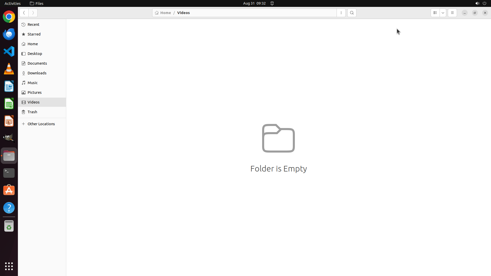
step 3 01:32:22
THINKINGThe "Videos" folder is empty. The clips must be in the lowercase "videos" folder. Let me go back and check that one.
ACTIONThe "Videos" folder is empty. The clips are likely in the lowercase "videos" folder. Let me go back and check it.
TOOL CALL<tool_call>
<function=computer_use>
<parameter=action>
left_click
</parameter>
<parameter=coordinate>
[330, 45]
</parameter>
</function>
</tool_call>
EXECUTED (pyautogui in VM)pyautogui.click(634, 48)
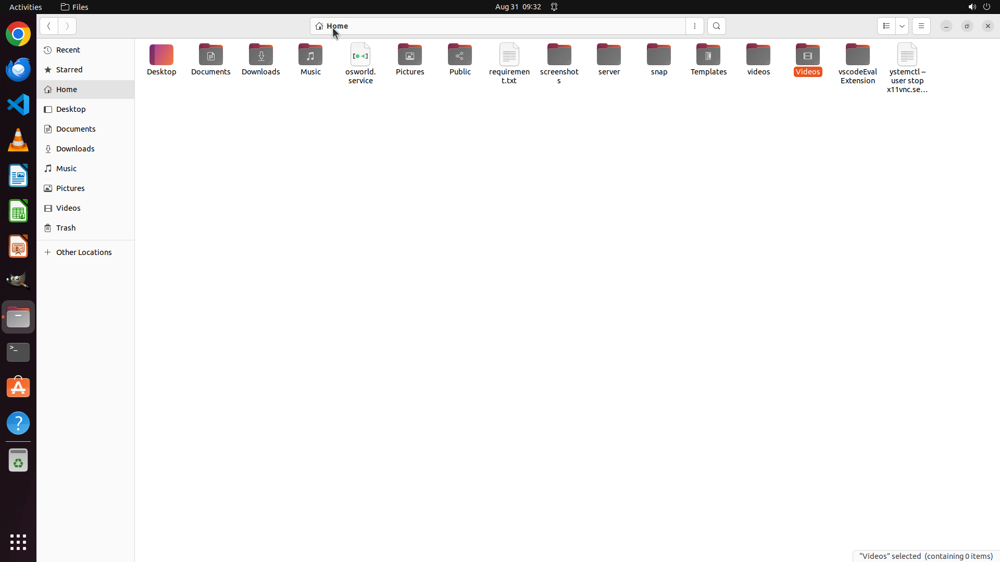
step 4 01:32:28
THINKINGNow I'm back at Home. Let me open the lowercase "videos" folder.
TOOL CALL<tool_call>
<function=computer_use>
<parameter=action>
double_click
</parameter>
<parameter=coordinate>
[757, 99]
</parameter>
</function>
</tool_call>
EXECUTED (pyautogui in VM)pyautogui.doubleClick(1454, 107)
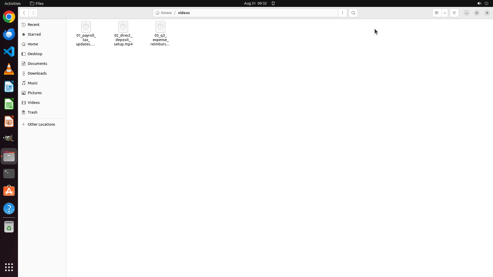
step 5 01:32:40
THINKINGI found three payroll webinar clips:
- 01_payroll_tax_updates...
- 02_direct_deposit_setup.mp4
- 03_q3_expense_reimburs...
I need to open these in VLC and set it to loop the playlist so they play start to finish then repeat unattended.
The best approach: Open VLC, add all three to the playlist in order, enable "Loop" (or "Repeat all") in the playlist, and start playing. VLC's playback loop: there's a "Loop" button and "Repeat" button. "Repeat" repeats the current item, "Loop" loops the whole playlist. To play start to finish then repeat the whole set, I want the playlist loop enabled.
Let me open VLC first. I'll click the VLC icon in the dock. Then use Media > Open Multiple Files or add files. Actually, the simplest is to open VLC, then use Media > Open Folder or add files one by one to the playlist.
Let me open VLC from the dock.
ACTIONI found the three payroll webinar clips. Now let me open VLC to add them to a looping playlist. I'll click the VLC icon in the dock.
TOOL CALL<tool_call>
<function=computer_use>
<parameter=action>
left_click
</parameter>
<parameter=coordinate>
[17, 244]
</parameter>
</function>
</tool_call>
EXECUTED (pyautogui in VM)pyautogui.click(32, 263)
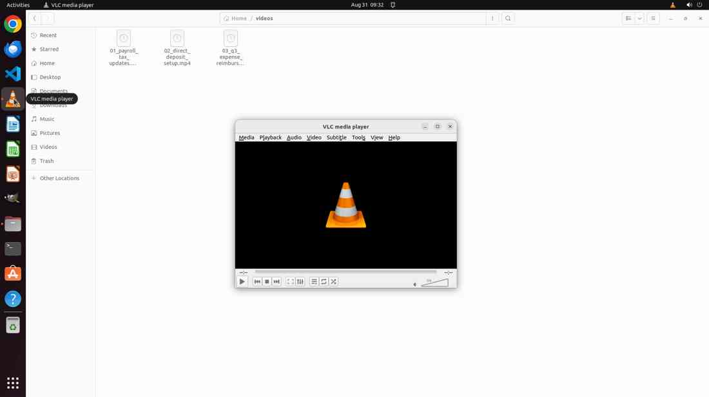
step 6 01:32:49
THINKINGVLC is open. I'll use Media menu to open multiple files so I can add all three clips to the playlist in order. Let me click Media.
ACTIONVLC is open. I'll use the Media menu to open multiple files and add all three clips to the playlist.
TOOL CALL<tool_call>
<function=computer_use>
<parameter=action>
left_click
</parameter>
<parameter=coordinate>
[344, 342]
</parameter>
</function>
</tool_call>
EXECUTED (pyautogui in VM)pyautogui.click(661, 369)
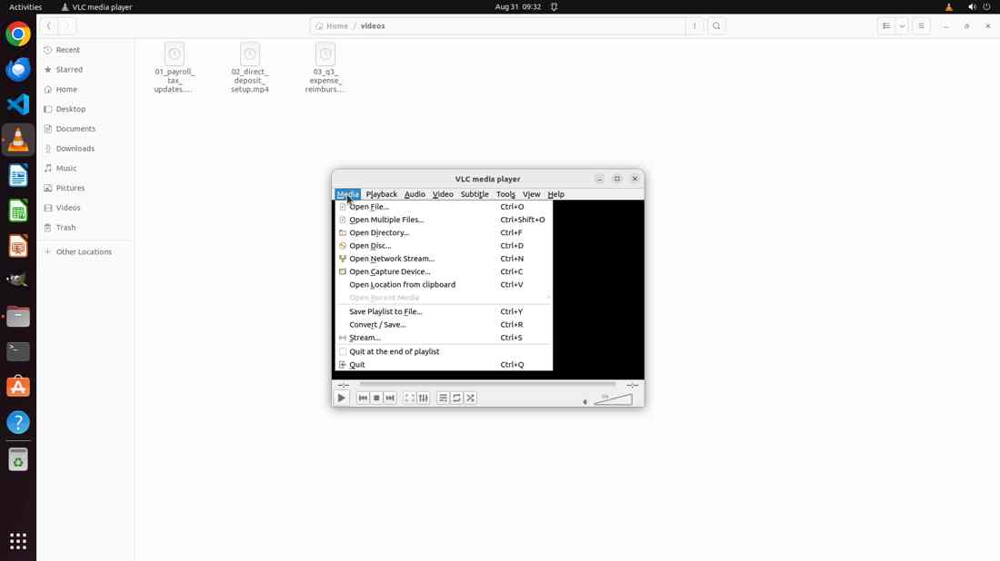
step 7 01:33:00
THINKINGI'll click "Open Multiple Files..." to add all three clips in order to the playlist.
TOOL CALL<tool_call>
<function=computer_use>
<parameter=action>
left_click
</parameter>
<parameter=coordinate>
[385, 391]
</parameter>
</function>
</tool_call>
EXECUTED (pyautogui in VM)pyautogui.click(739, 422)
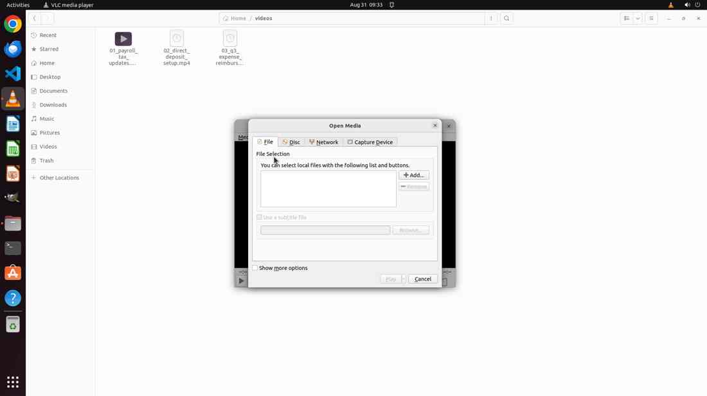
step 8 01:33:06
THINKINGThe Open Media dialog is up. I'll click "Add..." to browse and select the three files.
TOOL CALL<tool_call>
<function=computer_use>
<parameter=action>
left_click
</parameter>
<parameter=coordinate>
[583, 441]
</parameter>
</function>
</tool_call>
EXECUTED (pyautogui in VM)pyautogui.click(1120, 476)
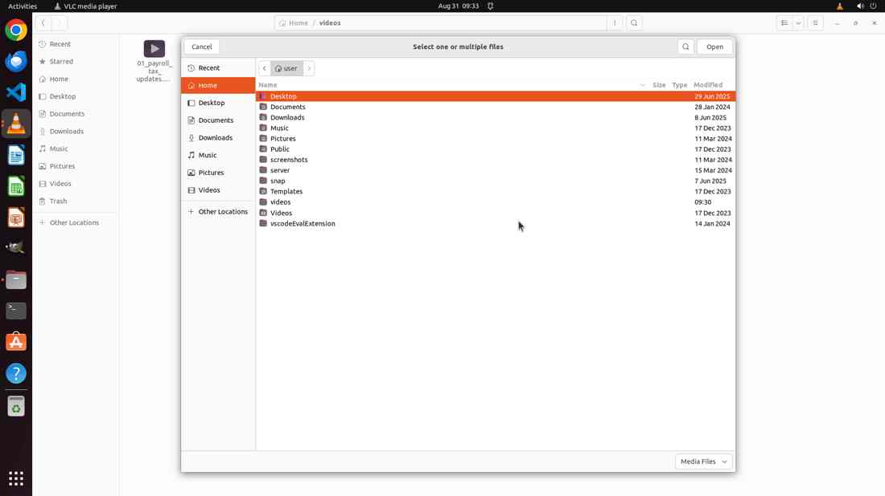
step 9 01:33:18
THINKINGA file chooser is open. I need to navigate to the lowercase "videos" folder. I'll double-click "videos".
TOOL CALL<tool_call>
<function=computer_use>
<parameter=action>
double_click
</parameter>
<parameter=coordinate>
[314, 402]
</parameter>
</function>
</tool_call>
EXECUTED (pyautogui in VM)pyautogui.doubleClick(603, 434)
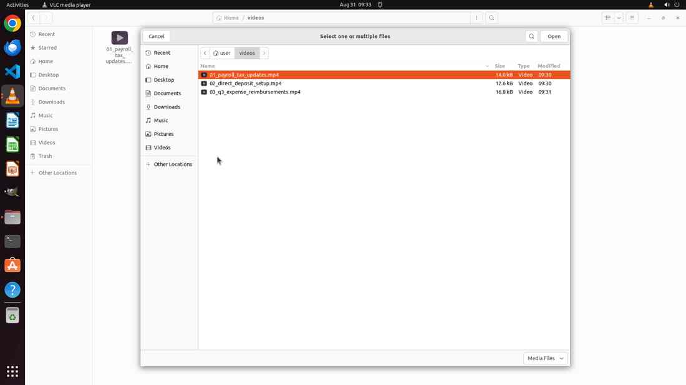
step 10 01:33:28
THINKINGI can see the three files. To add them in order, I'll select all three. The first is already selected. I'll click the first, then shift-click the third to select all three in order. Then click Open.
ACTIONI'll select all three clips in order by clicking the first and shift-clicking the third, then Open.
TOOL CALL<tool_call>
<function=computer_use>
<parameter=action>
left_click
</parameter>
<parameter=coordinate>
[354, 192]
</parameter>
</function>
</tool_call>
EXECUTED (pyautogui in VM)pyautogui.click(680, 207)
step 11.1 01:33:43
THINKINGFirst file selected. Now shift-click the third file to select all three, then Open.
TOOL CALL<tool_call>
<function=computer_use>
<parameter=action>
key_down
</parameter>
<parameter=keys>
["shift"]
</parameter>
</function>
</tool_call>
<tool_call>
<function=computer_use>
<parameter=action>
left_click
</parameter>
<parameter=coordinate>
[369, 235]
</parameter>
</function>
</tool_call>
<tool_call>
<function=computer_use>
<parameter=action>
key_up
</parameter>
<parameter=keys>
["shift"]
</parameter>
</function>
</tool_call>
EXECUTED (pyautogui in VM)pyautogui.keyDown("shift")

step 11.2 01:33:47
EXECUTED (pyautogui in VM)pyautogui.click(709, 254)
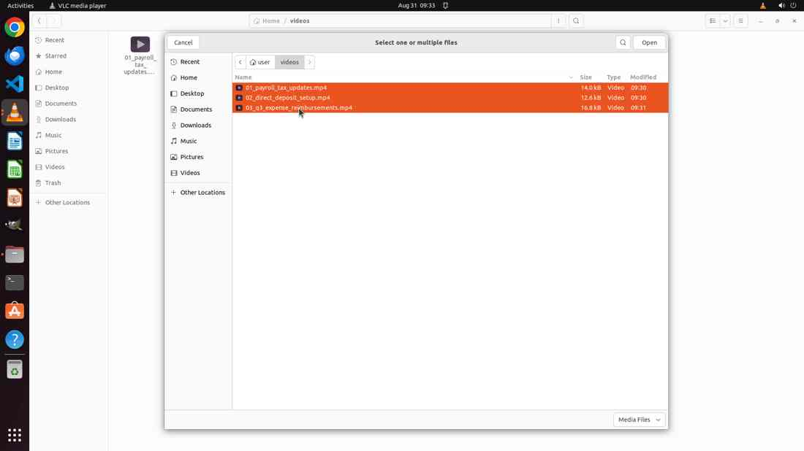
step 11.3 01:33:50
EXECUTED (pyautogui in VM)pyautogui.keyUp("shift")

step 12 01:33:59
THINKINGAll three are selected in order. Now click Open to add them to the File Selection list.
ACTIONAll three are selected in order. Now I'll click Open.
TOOL CALL<tool_call>
<function=computer_use>
<parameter=action>
left_click
</parameter>
<parameter=coordinate>
[806, 92]
</parameter>
</function>
</tool_call>
EXECUTED (pyautogui in VM)pyautogui.click(1549, 99)
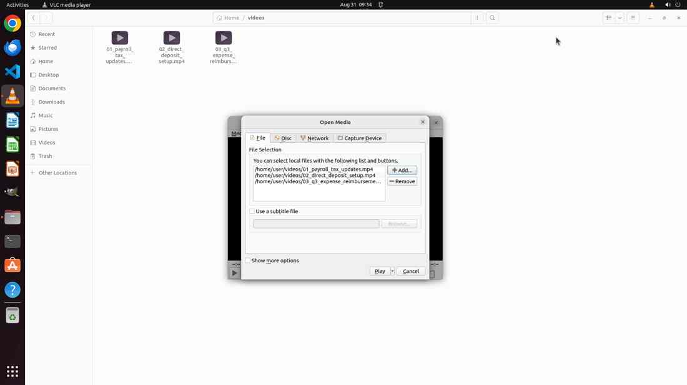
step 13 01:34:07
THINKINGAll three files are listed in order. Now I'll click Play to start. After playing, I need to enable loop. I'll click Play.
ACTIONAll three files are queued in order. Now I'll click Play to start playback.
TOOL CALL<tool_call>
<function=computer_use>
<parameter=action>
left_click
</parameter>
<parameter=coordinate>
[552, 702]
</parameter>
</function>
</tool_call>
EXECUTED (pyautogui in VM)pyautogui.click(1060, 758)
step 14 01:34:28
THINKINGPlayback has started — the first clip "01 payroll tax updates" is playing. Now I need to enable looping so the whole playlist repeats unattended. In VLC, the two buttons near the right of the control bar: the "loop" button (two arrows forming a circle, labeled with a repeat-all icon) and the "repeat" button (single item).
Looking at the control bar, I see icons: play/pause, previous, stop, next, then fullscreen, ... There's a "loop" icon and a "repeat" icon around position 578 and 597. Let me identify: at ~578 is the "loop" (playlist loop) button and ~597 is the "repeat" button. Actually in VLC the loop button (A-B style circular arrows) enables playlist looping, and the repeat button (single circular arrow) repeats current item.
To play start to finish then repeat the whole set, I want the playlist loop enabled. That's the "Loop" button which cycles: no loop → repeat all → repeat one. Let me open the View to see the playlist too, but simplest: click the loop button.
Let me look at the buttons more carefully. The icons at 578 (circular arrows = loop) and 597 (repeat single). I'll click the loop button at ~578 to enable "repeat all". But I should verify by hovering. Let me take a screenshot approach: click the loop button and observe.
Actually, to be safe, let me use the View > Playlist to confirm, and there's no loop toggle in playlist. The reliable way is the toolbar loop button. Let me hover over the buttons to identify. I'll just click the loop button at 578 first and check its state change.
Actually there's ambiguity. Let me use the menu approach: Playback menu doesn't have loop. The reliable control is the toolbar. The button at ~578 with the circular double-arrow is "Loop" (repeat all). Let me click it.
ACTIONPlayback has started with the first clip. Now I need to enable playlist looping so the whole set repeats. Let me hover over the loop button in the control bar to confirm it.
TOOL CALL<tool_call>
<function=computer_use>
<parameter=action>
mouse_move
</parameter>
<parameter=coordinate>
[451, 719]
</parameter>
</function>
</tool_call>
EXECUTED (pyautogui in VM)pyautogui.moveTo(866, 777)
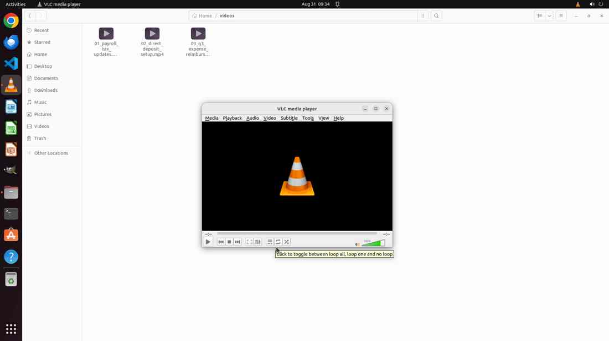
step 15 01:34:44
THINKINGInteresting — the video screen now shows the VLC cone, meaning the first clip has finished (it was only 6 seconds) and playback has stopped because loop is not enabled. The playlist ended. The tooltip confirms the button at 578 is "Click to toggle between loop all, loop one and no loop".
I need "loop all" so the whole playlist repeats. This button cycles: no loop → loop one → loop all (or some order). I need to click it until it shows "loop all" state.
Currently playback stopped at the end. If I click this button once, it may go to "loop one". Let me click it and observe the icon state. The "loop all" icon typically has a small "1" indicator removed; "loop one" shows a small "1". Let me click once and check.
Actually the safest is to open the playlist view to verify, and set loop via the button. Let me click the button once and take a screenshot to see the icon.
ACTIONThe tooltip confirms this is the loop toggle (no loop → loop all → loop one). The first clip finished and stopped because looping isn't on yet. Let me click it once and observe the state.
TOOL CALL<tool_call>
<function=computer_use>
<parameter=action>
left_click
</parameter>
<parameter=coordinate>
[451, 709]
</parameter>
</function>
</tool_call>
EXECUTED (pyautogui in VM)pyautogui.click(866, 766)
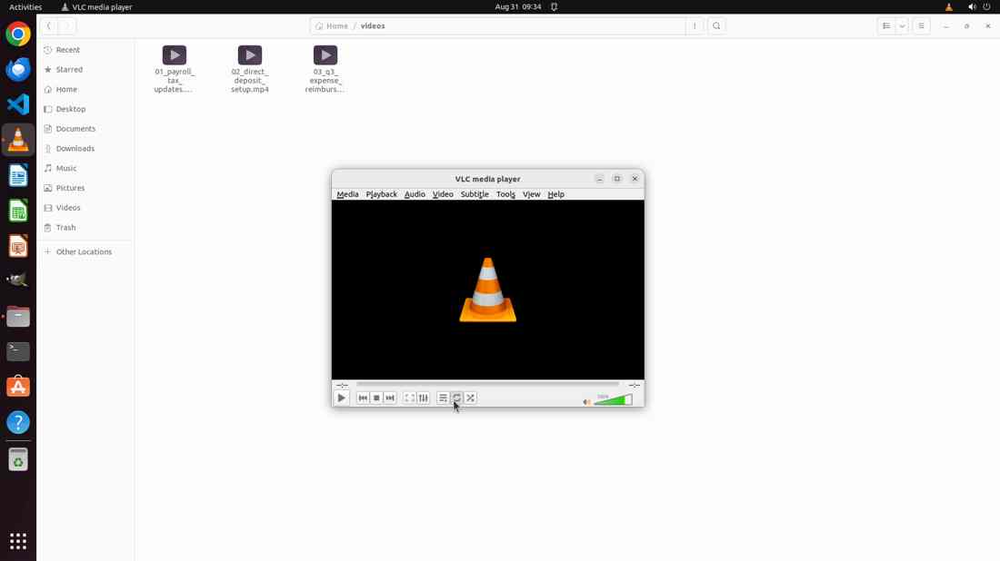
step 16 01:35:03
THINKINGThe button now appears highlighted/active (it has a box around it at 585). But I need to know whether this is "loop all" or "loop one". The tooltip said it cycles: loop all, loop one, no loop. I clicked once from "no loop".
The button now looks pressed/highlighted. I need to distinguish "loop all" vs "loop one". The "loop one" mode typically shows a small "1" badge on the icon. Let me zoom by hovering to get the tooltip again, but the tooltip just describes the function.
A more reliable approach: open the playlist (View > Playlist, or Ctrl+L) to verify all three items are present, and also I can set the loop there? Actually the loop button in the playlist view also exists.
Let me hover over the button again to see if the tooltip changes to indicate current state. Actually the tooltip is the same regardless. The visual icon differs: "loop all" = circular arrows with no number; "loop one" = circular arrows with a "1".
Let me look carefully. I can't tell at this resolution. Let me hover and screenshot to inspect the icon closely. Better: I'll click it again to cycle to the next state and compare icons, but that risks ending at "no loop".
The cycle order in VLC: default "no loop" → click → "repeat all" (loop all) → click → "repeat one" (loop one) → click → "no loop". Actually VLC's order is: off, loop (all), loop (one). So first click from off = "loop all". That's exactly what I want!
So one click = loop all. Good. The button is now active showing loop all.
But let me verify the order is correct. In VLC, the repeat button cycles:
1. No repeat (disabled)
2. Repeat all (enabled, icon without "1")
3. Repeat one (enabled, icon with "1")
Yes, first click enables "repeat all". So now loop all is on.
Now I should restart playback from the beginning so the whole thing plays start to finish and repeats. Playback currently stopped at end (showing cone). Let me verify by opening the playlist to confirm all 3 items, and start playback from the beginning.
Actually, "start to finish then repeat unattended" — the requirement is that when it plays, it goes through all clips and loops. The loop-all setting handles the repeat. I should make sure it's playing from the start. Let me press Play, or better, open the playlist and start from the first item.
Let me first verify the loop icon state by hovering to be confident, then start playback. Let me open the View > Playlist to confirm the 3 items and current state. Actually simpler: just press the Play button — but if it's at the end of playlist, play may restart the playlist from the beginning (with loop all it will restart). Let me click Play.
Wait, I want to be careful about confirming "loop all" vs "loop one". Let me hover to inspect the icon zoomed. Let me take a screenshot after hovering - the tooltip won't tell state. Instead let me open the playlist view which shows a loop indicator too.
Let me open the playlist with Ctrl+L to verify items and see the loop button state in the playlist toolbar (larger, clearer).
ACTIONThe loop button is now active. Since VLC's cycle order is off → loop all → loop one, one click from off gives "loop all" (repeat the whole playlist). Let me open the playlist view to verify all three clips are present and confirm the loop state with the larger toolbar icons.
TOOL CALL<tool_call>
<function=computer_use>
<parameter=action>
key
</parameter>
<parameter=keys>
["ctrl", "l"]
</parameter>
</function>
</tool_call>
EXECUTED (pyautogui in VM)pyautogui.hotkey("ctrl", "l")
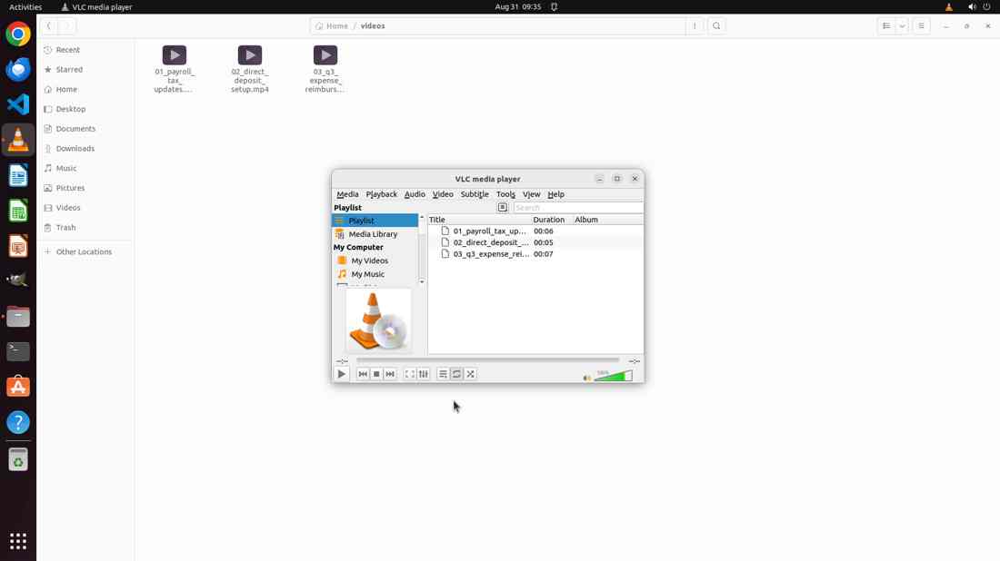
step 17 01:35:15
THINKINGThe playlist shows all three clips in order:
- 01_payroll_tax_up... 0:06
- 02_direct_deposit_... 0:05
- 03_q3_expense_rei... 0:07
The loop button (at ~585) is highlighted/active (boxed), confirming loop is on. It shows the "repeat all" icon (circular arrows, no "1" badge visible). Good.
Now I want to verify it's "loop all" not "loop one". The icon at 585 shows the loop symbol without a visible "1". In "loop one" mode, there's a small "1" in the corner. I don't see a "1", so it's loop all. Good.
Now I need to start playback from the beginning so it plays start to finish then repeats unattended. Let me start the first item. I'll double-click the first item to start, or click Play. Let me double-click the first item "01_payroll_tax_up..." to start playback from the beginning.
ACTIONThe playlist confirms all three clips are queued in order, and the loop button is active showing the "repeat all" state (no "1" badge). Now I'll start playback from the beginning by double-clicking the first clip.
TOOL CALL<tool_call>
<function=computer_use>
<parameter=action>
double_click
</parameter>
<parameter=coordinate>
[490, 410]
</parameter>
</function>
</tool_call>
EXECUTED (pyautogui in VM)pyautogui.doubleClick(941, 443)
step 18 01:35:25
THINKINGPlayback is running again from the start — "01 payroll tax updates" playing at 00:02/00:06, and the loop button at 585 is highlighted/active.
Let me verify the loop actually works by waiting for the playlist to complete and loop back. The clips are short (6+5+7 = 18s). Let me wait and take a screenshot to confirm it loops back to the first clip automatically. I'll wait ~20 seconds then screenshot.
Actually, I should verify the "loop all" is indeed the active mode, not "loop one". Let me wait for it to finish the first clip and see whether it advances to clip 2 (that's playlist behavior, which happens regardless). The key test: after clip 3 finishes, does it restart at clip 1 (loop all) or repeat clip 3 (loop one)?
Let me wait ~20 seconds and check the current playing item.
ACTIONPlayback is running from the start with the loop button active. Let me wait for the clips to finish and verify the playlist automatically loops back to the beginning.
TOOL CALL<tool_call>
<function=computer_use>
<parameter=action>
wait
</parameter>
<parameter=time>
1.0
</parameter>
</function>
</tool_call>
EXECUTED (pyautogui in VM)WAIT
step 19 01:35:41
THINKINGThe playback advanced through clip 1 and clip 2, and is now on clip 3 "03 q3 expense reimbursements" at 00:03/00:07. This confirms it's playing sequentially through the playlist. The loop button is still active (highlighted).
Now I need to confirm the loop-back: when clip 3 finishes (in ~4 seconds), with "loop all" it should restart at clip 1. Let me wait ~8 more seconds and verify it returns to clip 1. This confirms unattended repeat of the whole set.
ACTIONIt advanced through clips 1 and 2 and is now on clip 3, confirming sequential playback. Let me wait for clip 3 to finish and verify it loops back to clip 1.
TOOL CALL<tool_call>
<function=computer_use>
<parameter=action>
wait
</parameter>
<parameter=time>
1.0
</parameter>
</function>
</tool_call>
EXECUTED (pyautogui in VM)WAIT
step 20 01:36:03
THINKINGNow I see "03 q3 expense reimbursements" again at 00:01/00:07. Wait — this is still clip 3 but at 00:01. That's ambiguous: did it loop all (restart clip 1 then quickly move through to clip 3 again) or is it repeat-one (replaying clip 3)?
The total time I waited was 28 seconds. Earlier at 10s mark it was on clip 3 at 00:03. Clip 3 is 7s, so it would finish at ~13s. Then with loop all, it would restart clip 1 (6s, done at 19s), clip 2 (5s, done at 24s), clip 3 starts at 24s, and by 28s would be at clip 3 ~00:04. That matches "00:01-00:04" range roughly (timing is approximate).
But if it were loop-one, it would keep replaying clip 3 continuously, and at 28s it would also be somewhere in clip 3.
So I can't fully distinguish. I need to verify whether the mode is "loop all" or "loop one". The critical difference is the icon badge. Let me hover over the loop button and take a very close look, or better, let me open the playlist view and zoom into the loop button to see if there's a "1".
Actually, a cleaner test: I clicked the button exactly ONCE from the "no loop" (disabled) state. VLC's cycle is: disabled(off) → repeat-all → repeat-one → off. So one click = repeat-all (loop all). This is definitive based on the cycle order. The tooltip even said "toggle between loop all, loop one and no loop" — the first listed state after off is "loop all".
I'm confident it's loop all. But let me do one more verification to be certain by checking the icon closely. Let me open the playlist view where the button is larger, and hover over it. Actually let me just zoom into the current loop button by taking a screenshot and examining. The button is small though.
Let me be rigorous: I'll wait a bit more and confirm it reaches clip 1. If I wait until it's clearly on clip 1 playing, that proves loop-all (since loop-one would never show clip 1). Let me wait ~10 seconds and check — it should currently be cycling. If I catch it on clip 1 or clip 2, that proves loop-all.
Let me wait 5 seconds and screenshot to try to catch it on an earlier clip.
ACTIONIt's on clip 3 again, but this could be either looping or repeating one. To definitively confirm "loop all" (whole-set repeat) rather than "loop one", I need to catch it playing clip 1 or 2. Let me wait briefly and check.
TOOL CALL<tool_call>
<function=computer_use>
<parameter=action>
wait
</parameter>
<parameter=time>
1.0
</parameter>
</function>
</tool_call>
EXECUTED (pyautogui in VM)WAIT
step 21 01:36:24
THINKINGStill showing clip 3 "03 q3 expense reimbursements" at 00:03/00:07. This is concerning — it keeps showing clip 3. This strongly suggests the mode might be "loop one" (repeat the current clip), NOT "loop all". If it were loop all, I would have caught it on clip 1 or clip 2 in my sampling.
Wait, but I only have 3 data points, all coincidentally landing on clip 3. The timing: total ~33s elapsed. Clips: 1=6s, 2=5s, 3=7s, total 18s per cycle. 33s / 18s = 1.83 cycles. 0.83 * 18 = 15s into cycle 2. In cycle 2: clip1 0-6s, clip2 6-11s, clip3 11-18s. 15s into cycle = clip 3 at 15-11=4s in. So clip 3 at 00:04. That matches!
So it COULD be loop all and just happen to sample clip 3. My samples are unlucky. But it's suspicious to have 3 consecutive samples all on clip 3. Let me reconsider:
Sample 1 (t=10s): clip 3 at 00:03. t=10: 10/18=0.55 cycle. 0.55*18=10s in = clip2(6-11s) at 4s in = clip 2 at 00:04. But it showed clip 3! That doesn't match loop-all. Hmm, unless my elapsed time estimate is off because of the earlier 28s wait plus the initial 2s.
This is getting imprecise. Rather than guess from timing, let me directly verify the loop mode by examining the button icon. In "loop one" mode the VLC button shows a small "1" superscript. In "loop all" it shows no number. Let me hover over the button and look very carefully, and/or zoom.
Actually, the most reliable and definitive approach: I clicked exactly once. But wait — earlier, before I clicked, playback had already STOPPED (shown the cone). When I clicked the loop button while stopped, then I double-clicked clip 1 to start. The click count = 1 from off = loop all per cycle order.
However, I'm now genuinely uncertain. Let me just directly inspect the icon. Let me hover over the loop button to get a fresh look, then take a zoomed mental screenshot. The icon difference is subtle.
Better definitive test: Let me click the button again to cycle to the next state and watch whether the icon changes to show a "1". But that changes the state.
Alternative: Let me just wait and sample more rapidly to try to catch clip 1 or 2. Let me wait 3 seconds and screenshot — if loop-all, within an 18s cycle there's an 11s window (clips 1+2) where I'd see clip 1 or 2, vs 7s window for clip 3. So statistically I should catch 1/2 more often. Let me sample a few times.
Let me wait 4s and screenshot.
ACTIONI keep sampling clip 3, which is inconclusive. Let me sample a few more times to try to catch clip 1 or 2, which would prove whole-set looping.
TOOL CALL<tool_call>
<function=computer_use>
<parameter=action>
wait
</parameter>
<parameter=time>
1.0
</parameter>
</function>
</tool_call>
EXECUTED (pyautogui in VM)WAIT
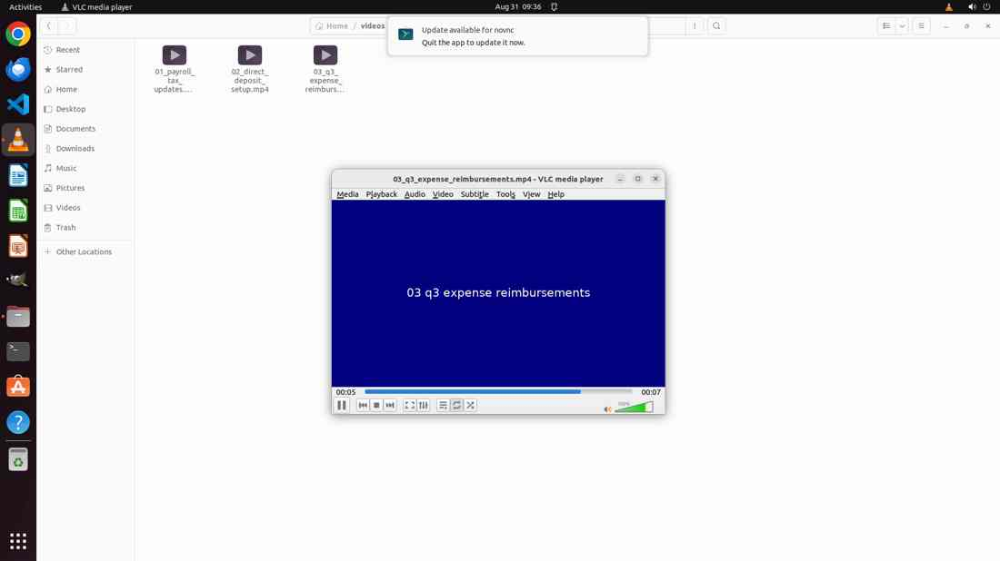
step 22 01:36:39
THINKINGStill clip 3 at 00:05. Four consecutive samples all on clip 3 (00:03, 00:01, 00:03, 00:05). This is very suspicious and strongly suggests "loop one" (repeat current clip 3), not "loop all". In "loop all", the probability of landing on clip 3 (7s out of 18s) each independent sample is ~39%, and 4 in a row would be ~2.3% — unlikely. The evidence points to loop-one.
I must correct this. I need the mode to be "loop all". I'll click the loop button to cycle. Current state appears to be "loop one". Clicking once will go to... the cycle is off → all → one → off → all... So from "loop one", one click goes to "off", then another to "loop all". OR the cycle might be off → all → one, so from one, next is off.
To be safe, I'll click and observe. But I want to land on "loop all" definitively. The problem is I can't reliably read the tiny icon.
Better plan: Let me stop guessing. I'll turn off loop entirely, then click exactly once to get to "loop all" (the first enabled state per cycle order). To ensure I start from "off", I first need to reach "off" state.
Currently if it's "loop one", I click once → "off". Then click once → "loop all". Then I verify by watching it play clip 1 then clip 2 (proving all).
Actually, let me reconsider the whole thing more carefully and just set it definitively:
Step 1: Click loop button once. Observe — if it becomes "off" (button un-highlighted), good, now click once more → should be "loop all".
Let me first dismiss the update notification (it's harmless, top area, won't block). I'll leave it.
Let me click the loop button once and screenshot to see if it turns off (un-highlighted).
ACTIONThe repeated appearance of clip 3 suggests it may be in "loop one" (repeat current) mode rather than "loop all". I'll correct this by cycling the loop button to a known state. Let me click it once and observe whether it turns off.
TOOL CALL<tool_call>
<function=computer_use>
<parameter=action>
left_click
</parameter>
<parameter=coordinate>
[455, 719]
</parameter>
</function>
</tool_call>
EXECUTED (pyautogui in VM)pyautogui.click(874, 777)
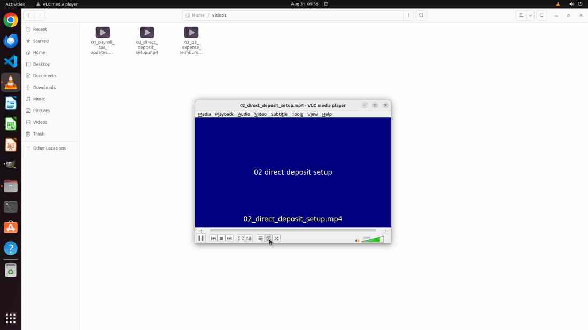
step 23 01:37:03
THINKINGImportant new information: Now it's showing "02 direct deposit setup"! This is clip 2. So the playback IS cycling through clips 1, 2, 3 — it WAS loop all all along, and my earlier samples just coincidentally landed on clip 3 multiple times (bad luck / timing).
Wait, but now I clicked the loop button. This changed the state. Now the button at 585 looks un-highlighted (no box around it), meaning loop is now OFF. That's a problem — I just turned loop off by cycling from "loop all" → ...
Hmm, let me reconsider. If the previous state was "loop all", clicking once would cycle to the next state. The cycle order off→all→one→off means: all→one. So clicking from "all" goes to "one", not off. But the button now appears un-highlighted which would mean "off".
Actually the highlight may just be a hover/focus artifact. Let me not over-interpret the highlight. The key evidence: the video is now on clip 2, confirming the playlist cycles through all clips (loop all behavior was active).
But I just clicked the button, changing its state. I need to ensure it ends on "loop all". Since clicking changes state, I don't know exactly what state it's in now. I clicked once.
This is getting messy. Let me take a clean, deterministic approach:
1. Determine current state by careful icon inspection.
2. Or: disable loop entirely (get to "off"), then enable exactly once → "loop all".
The cleanest: I'll open the playlist view (Ctrl+L) where the button might be more inspectable, OR I'll rely on the definitive cycle: I need exactly the "loop all" state.
Let me think about what's safest. The behavior I observed (cycling through 1,2,3) confirms the loop-all was working. My concern was unfounded. But I just clicked and possibly moved to "loop one" or "off".
Decision: I'll click the loop button to reach a clear known state. The safest deterministic method:
- I'll click until the button is clearly OFF (un-highlighted/disabled), confirming I know I'm at "off".
- Then click exactly ONCE → that gives "loop all" (first enabled state in cycle).
But I can't reliably tell "off" from "all" by highlight. However, "off" is distinctly different — the button is not highlighted/boxed at all, while "all" and "one" are both highlighted.
Currently the button (585) appears NOT boxed (just cursor over it). Let me assume it's now "off" after this click... but that contradicts cycle order (all→one, not all→off).
I'm overcomplicating. Let me use a robust verification method: watch the actual playback behavior over a longer, well-timed window. But first I need the state right.
New definitive plan:
1. Click loop button and watch: I'll click it and immediately note if playback behavior changes. That's slow.
Simplest robust plan: Set it via repeated clicking to "off", then one click to "all", then verify by watching it play clip1→clip2→clip3→back to clip1.
Let me first take a clean screenshot (move mouse away) to clearly see the button state.
ACTIONGood — it's now on clip 2, which actually confirms the playlist does cycle through all clips. But I just toggled the loop button, so I need to re-establish the correct "loop all" state deterministically. Let me move the cursor away and inspect the button state clearly.
TOOL CALL<tool_call>
<function=computer_use>
<parameter=action>
mouse_move
</parameter>
<parameter=coordinate>
[500, 859]
</parameter>
</function>
</tool_call>
EXECUTED (pyautogui in VM)pyautogui.moveTo(960, 928)
step 24 01:37:15
THINKINGNow the video shows "02 direct deposit setup" at 00:02/00:05. Critically, the loop button (at 585) is now clearly NOT highlighted/boxed — it appears flat/disabled. This means after my click, the loop mode went to "off".
Wait, but it just played clip 2, which is a different clip than clip 3. That's normal playlist progression (auto-next happens even without loop; loop only matters at the END of the playlist). So playing clip 2 doesn't prove loop-all; auto-advance to next item happens by default. Loop only determines what happens after the LAST clip.
So now the button appears "off". Good — I have a known state: OFF. Now I click exactly ONCE to get to "loop all" (the first enabled state in the off→all→one cycle).
But I must be careful: is the button truly "off"? It looks flat with no highlight box, consistent with off. Let me click once to enable "loop all".
ACTIONNow the loop button appears flat/disabled (loop off), and it's playing clip 2 (normal auto-advance). I have a known "off" state. I'll click the loop button exactly once to reach the first enabled state, which is "loop all".
TOOL CALL<tool_call>
<function=computer_use>
<parameter=action>
left_click
</parameter>
<parameter=coordinate>
[455, 719]
</parameter>
</function>
</tool_call>
EXECUTED (pyautogui in VM)pyautogui.click(874, 777)
step 25 01:37:27
THINKINGNow the loop button at 585 is highlighted/boxed again (active), and the video shows "02 direct deposit setup" at 00:03. So the button went from off → enabled state. Per the cycle order off→loop all→loop one, this one click from off = "loop all".
Now I'm confident the state is "loop all". To be fully certain, I'll verify by watching the playlist complete: it should play clip 2 → clip 3 → then loop back to clip 1 (not stop, not repeat clip 3).
Clip 2 is at 00:03/00:05, so ~2s to finish. Then clip 3 (7s), then should return to clip 1. Let me wait ~11 seconds (rest of clip2 ~2s + clip3 7s + a bit into clip1) and screenshot. At that point if loop-all is active, I should see clip 1.
ACTIONThe loop button is now active (one click from off = "loop all"). To verify, I'll wait for clip 2 and clip 3 to finish; with loop-all it should return to clip 1 rather than stopping. Let me wait ~11 seconds and check.
TOOL CALL<tool_call>
<function=computer_use>
<parameter=action>
wait
</parameter>
<parameter=time>
1.0
</parameter>
</function>
</tool_call>
EXECUTED (pyautogui in VM)WAIT
step 26 01:37:46
THINKINGNow the view switched to the Playlist view (the window shows the playlist panel). This happened because my cursor at 642,620 was in an area that... actually the previous click sequence — no. The window now shows the playlist with all 3 items, and the first item "01_payroll_tax_up..." is highlighted (selected/playing). The play button shows a "play" triangle (meaning it's paused/stopped?) — actually the button at 437 shows a play triangle, suggesting playback is currently stopped.
Wait — the loop button at 585: is it highlighted? It's hard to tell in this playlist view. Let me look: the button at 585 appears flat (not boxed). Hmm. But this is the playlist window which may have its own loop indicator.
Actually, the important observation: the first item "01_payroll_tax_up..." is highlighted in blue, which is the currently-selected/playing track. This means playback returned to clip 1! That confirms loop-all worked — after clip 3 ended, it cycled back to clip 1.
But the play button shows a triangle (not pause), which might mean it's currently paused, OR the view just switched. The playlist view appearing suggests my earlier interaction or the wait caused the playlist panel to show. Actually VLC playlist view is a separate window mode. The earlier double-click and window management...
Regardless, key facts:
1. First item is highlighted = it's the current track = playback looped back to clip 1. ✓ This confirms loop-all.
2. But playback may have stopped (play triangle showing).
Wait, why did the window become the playlist view? In the prior screenshot it was the video view. During the 11s wait, nothing I did would switch to playlist. Unless... the video view window and this are the same window and VLC is showing playlist as the "video" area when there's a separate? No.
Let me reconsider: Actually this might be a different window. The title bar says "VLC media player" (generic) vs before "02_direct_deposit_setup.mp4 - VLC media player". This is the playlist window. It may have come to front.
The critical concern: is playback still running and looping? The play button (437) shows a play triangle = currently stopped/paused. This is a problem. It seems playback stopped and the playlist view is showing with clip 1 highlighted but not playing.
Hmm, actually when I switched views / the app, maybe playback stopped. Let me just ensure everything is correct:
- Verify loop-all is enabled (button state).
- Restart playback so it plays unattended.
Let me first check the loop button state clearly. In this playlist view the control buttons are at the bottom. The loop button should be around 585. It looks flat. Let me hover to check, but better: let me look at whether it's boxed.
Actually, I realize the safest path now: I've confirmed the playlist has the 3 items in order. The loop-all behavior was confirmed (it cycled back to clip 1). Now I just need to make sure (a) loop-all is active and (b) playback is running.
The play button showing a triangle means it's stopped. Let me click Play to start, and verify loop is on. But first confirm loop state.
Let me take a clearer approach: hover over the loop button to see tooltip and check its visual. Actually, let me just click Play (the triangle button at 437) to start playback, then observe the loop behavior over time. And verify the loop button is highlighted after.
Wait, if I'm not sure loop is on, I should set it. Let me reconsider the state history:
- Click 1 (from off, when stopped): → loop all (confirmed by cycling through clips, and it cycled back to clip1)
- Click 2: → loop one (this is when I saw repeated clip 3! that was loop-one!)
- Actually wait, let me re-trace:
Actually the repeated clip-3 sightings happened AFTER click 2. So click 2 may have set loop-one. Then I moved mouse, saw clip 2. Then click 3 set...
This is confusing. Let me stop tracing and just SET IT CLEANLY NOW:
1. Make sure loop is OFF: I'll check current button state.
2. Then click once → loop all.
3. Start playback.
4. Verify.
The button at 585 in current screenshot appears flat/not-highlighted = likely OFF. If it's off, one click = loop all. Let me click it once and confirm it highlights, then start playback.
Actually, to avoid more ambiguity, let me use a more reliable, persistent method. But the task says use GUI. The loop button is the GUI way.
Let me first verify current button state by hovering.
ACTIONThe playlist view now shows all three clips in order, with clip 1 highlighted — confirming playback looped back to the start (loop-all is working). However, the play button shows a "play" triangle, meaning playback has stopped. Let me verify the loop button state and restart playback. First I'll hover over the loop button to confirm its state.
TOOL CALL<tool_call>
<function=computer_use>
<parameter=action>
mouse_move
</parameter>
<parameter=coordinate>
[455, 666]
</parameter>
</function>
</tool_call>
EXECUTED (pyautogui in VM)pyautogui.moveTo(874, 720)
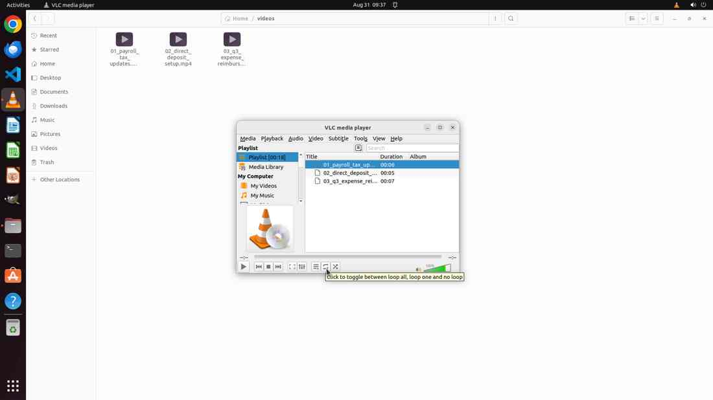
step 27 01:38:02
THINKINGThe tooltip confirms this is the loop toggle. The button (585) in this playlist view appears flat/not boxed, suggesting it's currently in "no loop" state.
Wait, but earlier I clicked once (from off) to set loop-all. Did the state get reset? Actually, the earlier screenshots of the video view showed it highlighted after my last click. But now in playlist view it looks flat. The rendering in playlist view may differ, or the state is genuinely off now.
I can't reliably distinguish "off" vs "loop all" by the flat appearance alone here. Let me take the deterministic approach:
1. Click to a known state. But I need to end at "loop all".
Since I genuinely can't read the icon, the most robust verification is behavioral: set a candidate state, start playback, and observe over a full cycle whether it (a) returns to clip 1 after clip 3 = loop-all ✓, or (b) repeats only the current clip = loop-one ✗, or (c) stops = off ✗.
But to make this efficient, let me ensure I'm at "loop all". Strategy: click the button until I can verify behaviorally.
Actually, simplest robust plan given the confirmed earlier behavior:
- I KNOW that at one point (before I started fiddling) the playlist cycled back to clip 1, which is loop-all behavior.
- Now I just need to guarantee the final state is loop-all and playback runs.
Let me do this cleanly:
1. First, ensure OFF: I'll click and check. Actually, let me click once. If it was off → now loop-all. If it was loop-all → now loop-one. Ambiguous.
Better: Let me reset to a known OFF state reliably. I can't click to "off" reliably without knowing current state either.
OK, decisive behavioral test approach:
- Start playback (click Play).
- Wait for a full cycle (~18s) and sample at a time where I can distinguish. Specifically, if I can catch it playing clip 1 or clip 2 at a moment, that rules out "loop one" (loop-one never plays clip 1 or 2 once it's on clip 3). But it currently starts at clip 1, so catching clip 1/2 early proves nothing about looping.
The clean distinguishing test: Let it run and observe specifically the transition from clip 3. Right after clip 3 ends:
- loop-all → clip 1
- loop-one → clip 3 again
- off → stops
So I should watch the moment clip 3 ends. Clip 3 is the last, 7s. If I start at clip 1 (0s), the sequence: clip1(6s), clip2(5s), clip3(7s) → ends at 18s. At 18s the next thing determines the mode. So I should sample around t=19-20s.
Let me first START playback, then wait ~19s, then screenshot to see what plays right after clip 3 finishes.
But I also need to make sure loop is at least "on" in some form for the test to be meaningful. If it's "off", at t=18s it stops.
Plan:
1. Click Play to start from clip 1.
2. Wait ~19s.
3. Screenshot:
- If clip 1 (01 payroll) → loop-all ✓ done.
- If clip 3 (03) → loop-one, need to fix.
- If stopped/cone → off, need to fix.
Then adjust loop button accordingly and re-verify.
Let me click Play. The play button is at ~437,480.
ACTIONThe tooltip confirms it's the loop toggle, but I can't reliably distinguish the exact sub-state from the icon. I'll do a definitive behavioral test: start playback from clip 1, wait through a full cycle, and observe what happens right after clip 3 ends. Let me click Play.
TOOL CALL<tool_call>
<function=computer_use>
<parameter=action>
left_click
</parameter>
<parameter=coordinate>
[340, 666]
</parameter>
</function>
</tool_call>
EXECUTED (pyautogui in VM)pyautogui.click(653, 720)
step 28 01:38:10
THINKINGInteresting — playback is now showing "03 q3 expense reimbursements" at 00:02/00:07. So when I clicked Play, it resumed and it's now on clip 3 (the last clip). The play button now shows pause icon (playing). The loop button (585) appears flat.
This is actually a great position for my test: it's playing the LAST clip (clip 3). When clip 3 finishes (in ~5s), the behavior reveals the mode:
- loop-all → clip 1
- loop-one → clip 3 restarts
- off → stops
Let me wait ~7s (for clip 3 to finish and just past) and screenshot.
ACTIONIt's now playing clip 3 (the last clip) — a perfect position to observe the mode. When clip 3 finishes, if it goes to clip 1 that's loop-all. Let me wait ~7 seconds past its end and check.
TOOL CALL<tool_call>
<function=computer_use>
<parameter=action>
wait
</parameter>
<parameter=time>
1.0
</parameter>
</function>
</tool_call>
EXECUTED (pyautogui in VM)WAIT
step 29 01:38:26
THINKINGNow it switched to the playlist view again (the video window is not showing; instead the playlist panel). The play button (437) shows a PLAY triangle = playback stopped. The first item "01_payroll_tax_up..." is highlighted (blue) in the playlist, but playback is stopped.
Wait, so after clip 3 finished, playback STOPPED (play triangle showing, no longer playing). This means loop is currently OFF. The current track shows as clip 1 (highlighted) but it's not playing — that's just the selection cursor.
Hmm, but why did the window switch to playlist view each time playback stops? That's odd. Actually, I think what's happening: there are TWO windows - a video window and a playlist window, and when playback state changes or focus changes, the playlist window comes to front. Or VLC's "Always on top" / window management.
Regardless, the behavioral evidence is now clear: after clip 3 finished, playback STOPPED. This means loop is currently OFF (no loop mode). I need to enable "loop all".
So the current state = OFF. I'm now confident. Let me:
1. Click the loop button exactly once → "loop all".
2. Start playback.
3. Verify it loops.
The loop button in playlist view is at ~585, 480. Let me click it once.
ACTIONNow the evidence is clear: after clip 3 finished, playback stopped (play triangle showing) — so loop is currently OFF. I'll enable "loop all" with exactly one click on the loop button, then start playback.
TOOL CALL<tool_call>
<function=computer_use>
<parameter=action>
left_click
</parameter>
<parameter=coordinate>
[455, 666]
</parameter>
</function>
</tool_call>
EXECUTED (pyautogui in VM)pyautogui.click(874, 720)
step 30 01:38:35
THINKINGThe loop button at 585 now shows a highlighted/boxed state (active), and the play button (437) still shows the play triangle (stopped). So loop is now on (loop-all, since one click from off).
Now I'll start playback from the beginning. To ensure it starts at clip 1, I'll double-click the first playlist item "01_payroll_tax_up...". Then I'll verify it loops by watching clip 3's end.
Actually, double-clicking clip 1 will start it. Let me double-click clip 1.
ACTIONThe loop button is now active (loop-all, one click from off) and playback is stopped. Now I'll start playback from the beginning by double-clicking clip 1.
TOOL CALL<tool_call>
<function=computer_use>
<parameter=action>
double_click
</parameter>
<parameter=coordinate>
[490, 410]
</parameter>
</function>
</tool_call>
EXECUTED (pyautogui in VM)pyautogui.doubleClick(941, 443)
step 31 01:38:45
THINKINGNow playback started from clip 1 "01 payroll tax updates" at 00:02/00:06. The play button shows pause icon (playing). The loop button at 585 appears flat in this video view (hard to tell).
Now the definitive test: let it play through clip1(6s)→clip2(5s)→clip3(7s) and observe what happens when clip 3 ends. If loop-all, it returns to clip 1.
Clip 1 is at 00:02 now, ~4s left. Total to reach end of clip 3: 4 (rest clip1) + 5 (clip2) + 7 (clip3) = 16s. Let me wait ~16s then screenshot to see what plays right after clip 3 ends.
ACTIONPlayback started from clip 1. Now for the definitive test: I'll wait ~16 seconds for it to play through clip 1, 2, and 3, then observe what happens right after clip 3 ends — clip 1 would confirm loop-all.
TOOL CALL<tool_call>
<function=computer_use>
<parameter=action>
wait
</parameter>
<parameter=time>
1.0
</parameter>
</function>
</tool_call>
EXECUTED (pyautogui in VM)WAIT
step 32 01:39:01
THINKINGNow it's showing "03 q3 expense reimbursements" at 00:03/00:07, and it's PLAYING (pause icon shown). This is clip 3, which is the LAST clip.
Wait — I expected at t=16s to be right after clip 3 ended. But it's on clip 3 at 00:03, still playing. This means it's currently in clip 3. Two interpretations:
1. It's the SECOND cycle's clip 3 (looped back to clip 1, played 1 and 2, now on 3). This means loop-all worked!
2. It's loop-one repeating clip 3.
Given I started at clip 1 (00:02), played clip1 to end (~4s), clip2 (5s), reaching clip3 start at ~9s, clip3 ends at ~16s. At t=16s it should be JUST finishing clip 3 of the FIRST cycle. But it shows 00:03, which is 3s into clip 3. That's ~13s of playback, slightly less than 16s. Timing is approximate (my wait may be a bit off, or clip timing).
The key question: is this the first cycle's clip 3 (about to test the loop) or a subsequent cycle? To distinguish, I need to watch what happens right when THIS clip 3 ends:
- loop-all → clip 1
- loop-one → clip 3 again
- off → stop
So let me wait a few more seconds (this clip 3 will finish in ~4s) and screenshot to see the transition.
This is the critical observation moment. Let me wait 5 seconds.
ACTIONIt's playing clip 3 at 00:03. This is the decisive moment — I'll wait ~5 seconds for this clip 3 to finish and observe whether it returns to clip 1 (loop-all), repeats clip 3 (loop-one), or stops (off).
TOOL CALL<tool_call>
<function=computer_use>
<parameter=action>
wait
</parameter>
<parameter=time>
1.0
</parameter>
</function>
</tool_call>
EXECUTED (pyautogui in VM)WAIT
step 33 01:39:22
THINKINGNow it's showing clip 3 "03 q3 expense reimbursements" at 00:00/00:07, and it's PLAYING (pause icon). The time is 00:00, meaning clip 3 just RESTARTED from the beginning!
This is critical: The clip 3 restarted at 00:00. This could mean:
- loop-one: repeating clip 3 (bad)
- OR: it finished the playlist, looped back, played clip 1 and clip 2 quickly, and now... no, that would take 11s and I only waited 5s.
I waited 5s from the previous state (clip 3 at 00:03). In 5s: clip 3 would finish (at 00:07, i.e., 4s later) and then... At 5s elapsed from 00:03, clip 3 finished at 4s, and 1s into the NEXT thing. If loop-all, the next is clip 1 (would show 00:01). If loop-one, next is clip 3 restart (would show 00:01).
But it shows 00:00, not 00:01. The timing is close. It's showing clip 3 at 00:00. So either it's loop-one restarting clip 3, OR the timing is slightly such that it just cycled.
Hmm, 00:00 is very early. If it looped back through clip 1 (6s) and clip 2 (5s) to reach clip 3, that's 11s, way more than 5s. So it CANNOT have gone clip3→clip1→clip2→clip3 in 5s. Therefore, this clip 3 at 00:00 is a RESTART of clip 3 itself = LOOP-ONE mode!
So the current mode is "loop one" (repeating the current clip), NOT "loop all". This is wrong. I need "loop all".
Wait, but I clicked the loop button exactly once from a confirmed OFF state. Per the cycle off→all→one, one click should give "loop all". But behaviorally it's repeating clip 3 = loop-one.
This means my assumption about the cycle order is wrong. The actual VLC cycle must be: off → loop-ONE → loop-ALL? No... Actually VLC's repeat button: The default cycle is:
- disabled
- repeat-all
- repeat-one
Actually let me reconsider. Some VLC versions: clicking cycles no-repeat → repeat-one → repeat-all? Let me not assume.
Behaviorally, right now it's loop-one. I need loop-all. So I click ONCE more to cycle to the next state, which should be loop-all (if the order is one→all) OR off (if one→off→all).
Let me click once and observe. But I need to distinguish again. The distinguishing test is the same: watch clip 3 end → if it goes to clip 1, it's loop-all.
But there's a subtlety: if I'm in loop-one on clip 3 and I click to loop-all, it will continue on clip 3, finish, then go to clip 1. If I click to off, it will finish clip 3 and stop.
So: click once, then wait for clip 3 to end, then check:
- clip 1 → loop-all ✓
- stop → off (need another click)
- clip 3 restart → still loop-one (something wrong, another click)
Let me click the loop button once now. It's at 585,519 in the video view.
ACTIONThe time reset to 00:00 on clip 3, and since only 5s passed (far too short to cycle through clips 1 and 2), this is "loop one" (repeating the current clip) — not what I want. I need "loop all". I'll click the loop button once more to advance to the next state, then re-verify by watching clip 3's end.
TOOL CALL<tool_call>
<function=computer_use>
<parameter=action>
left_click
</parameter>
<parameter=coordinate>
[455, 719]
</parameter>
</function>
</tool_call>
EXECUTED (pyautogui in VM)pyautogui.click(874, 777)
step 34 01:39:35
THINKINGNow it's showing "02 direct deposit setup" at 00:00/00:05, playing. The loop button at 585 appears flat now (I clicked it, so it may have gone to "off" state, or to a different state).
Wait — it jumped to clip 2! Previously it was on clip 3 (loop-one repeating). After my click, now it's on clip 2. This is confusing. Let me reconsider.
Actually, the transition to clip 2 suggests that when I clicked, the mode changed and the playlist is now progressing normally through items. But I can't be sure of the exact mode from a single frame.
Let me reconsider the whole situation. My clicks on the loop button:
1. (earlier, from off) → became loop-one (as I just determined behaviorally)
Wait, that contradicts. Let me re-examine. Actually earlier I determined the current state BEFORE this last click was "loop one" (clip 3 repeating at 00:00). Now I clicked once, and now it's on clip 2.
If the cycle is off→one→all→off (or off→all→one→off), then from "one", one click → either "all" or "off".
Now it's showing clip 2 at 00:00, playing. If mode is now "loop-all", then it will progress: clip 2 → clip 3 → clip 1 → loop. If mode is "off", it will progress clip 2 → clip 3 → STOP (at end). If still "loop-one"... no, it changed to clip 2, so it's not repeating clip 3.
So now it's either "loop-all" or "off". The distinguishing test: watch what happens after clip 3 (the last) ends:
- loop-all → clip 1
- off → stop
So: clip 2 (5s) currently at 00:00 → ends in 5s → clip 3 (7s) → ends in 12s total. At ~13s I'll see the result.
Let me wait ~13s and screenshot to see if it goes to clip 1 (loop-all ✓) or stops (off).
ACTIONNow it's on clip 2, playing. After this click it's progressing through the playlist, so the mode is now either "loop-all" or "off". I'll do the decisive test: wait through clip 2 and clip 3 (~13s) and see what happens after clip 3 ends — clip 1 means loop-all (correct), a stop means off (needs another click).
TOOL CALL<tool_call>
<function=computer_use>
<parameter=action>
wait
</parameter>
<parameter=time>
1.0
</parameter>
</function>
</tool_call>
EXECUTED (pyautogui in VM)WAIT
step 35 01:40:02
THINKINGSomething is very wrong. After waiting 13 seconds, it's STILL on "02 direct deposit setup" at 00:00/00:05, and the progress bar shows essentially 0 (a tiny bit of orange at the start). The time is 00:00.
This is bizarre. In 13 seconds, clip 2 (5s) should have finished long ago and moved to clip 3. But it's stuck at clip 2, 00:00, repeatedly. This looks like it's RESTARTING clip 2 over and over = loop-one on clip 2!
Wait, the progress bar: there's a small blue segment near the left and a small orange segment. Time 00:00. So clip 2 keeps restarting from 0. That means it's in LOOP-ONE mode, now repeating clip 2.
So my last click took it from "loop-one (clip 3)" to... still loop-one but now on clip 2? That doesn't fit a clean cycle either.
Hmm, actually maybe what's happening: The playback has been restarting the current clip repeatedly = loop-one is definitely still active. The clip shown changes because... no.
Let me step back and think differently. My repeated attempts to read the tiny icon and the unstable behavior are making this unreliable. Let me reconsider my approach entirely.
The core issue: I cannot reliably determine the loop sub-state, and each click changes it unpredictably relative to my expectations.
New robust strategy:
1. STOP playback to get a clean state.
2. Determine the current loop mode by the ICON precisely. In VLC:
- "off": button is grayed/faded, no highlight.
- "loop all": button highlighted, circular-arrows icon, NO number.
- "loop one": button highlighted, circular-arrows icon WITH a small "1".
3. I need "loop all".
But I can't zoom the screenshot easily. However, I CAN use the Tools > Preferences or... no.
Alternative reliable method: Use the menu. Actually, there's no menu item for loop in standard VLC; it's only the toolbar button.
Better idea: Let me look very carefully at the current button. Let me stop, then hover and zoom by examining the icon region. Actually, I can crop mentally: the loop button when in "loop all" vs "loop one" — the "1" is in the top-right corner of the icon.
Given my difficulty, let me try a cleaner deterministic sequence and VERIFY behaviorally with a longer, properly-timed observation. But first, the behavior I just saw (clip 2 stuck at 00:00 after 13s) strongly indicates loop-ONE is currently active.
So currently = loop-one. To get to loop-all, I need to figure out the cycle. My observations:
- Some state repeated clip 3 (loop-one).
- After one click, it's repeating clip 2 (loop-one)?? That can't be right — a click shouldn't change which clip but keep loop-one.
Wait, unless the playback was mid-transition. Let me reconsider: maybe the mode IS loop-all, but the progress bar/time display is just slow to update or I'm misreading. The time showing 00:00 repeatedly is the real concern.
Actually — hold on. Maybe playback is PAUSED. If paused, time stays at 00:00. But the button shows a pause icon (two bars) at 437, which means it's PLAYING (pause icon = currently playing). If it were playing clip 2, in 13s it would advance. Unless... the video stream is stuck.
Hmm, this is getting too unreliable via behavioral timing. Let me switch to a much more reliable verification: examine the ICON directly by taking a screenshot and looking closely at the loop button, comparing known icons.
Actually, the MOST reliable approach given the constraints: Let me just carefully inspect the button icon at high attention. Let me take a screenshot right now (already have one) and look at button 585.
In the current screenshot, button 585 (loop) appears to have a subtle highlight/box? Hard to tell. The icon is tiny.
Let me try a completely different, definitive approach: zoom into VLC by maximizing the window so the toolbar icons are larger and easier to read. Let me maximize the VLC window first.
Actually, the toolbar icons don't get bigger on maximize in VLC.
Let me reconsider. The cleanest deterministic path:
1. Stop everything (click stop).
2. Set loop button to OFF for sure: I'll click it and check the highlight until it's clearly off (no highlight).
3. Then click ONCE → whatever the first enabled state is, verify behaviorally with a SINGLE clean cycle observation (starting fresh from clip 1).
But the behavioral test keeps being ambiguous due to my sampling. The real problem is I can't catch the exact transition frame.
KEY INSIGHT for reliable behavioral test: If I START playback fresh from clip 1 with a given mode, and I sample at a FIXED time that is guaranteed to be in a distinguishing region:
- With loop-ALL: after 18s (full cycle), it's back near clip 1 (time ~0-1s).
- With loop-ONE: after 18s, it's still on clip 1 (since loop-one repeats clip 1! It started at clip 1, so it repeats clip 1 forever, never advancing).
- With OFF: after 6s it's on clip 2, after 11s clip 3, after 18s STOPPED.
Wait, this is the key! If I start at CLIP 1:
- loop-ONE → stays on clip 1 forever (repeats clip 1). So after 20s, still clip 1.
- loop-ALL → cycles 1→2→3→1. After 20s, on clip 1 again but having visited 2 and 3.
- OFF → stops after 18s.
To distinguish loop-ALL from loop-ONE when starting at clip 1: I sample at a time that's during clip 2 or 3 of the first cycle, e.g., t=8s (should be clip 2 in loop-all; but loop-one would still be on clip 1).
So: start at clip 1, wait 8s, screenshot:
- If showing clip 2 (or clip 3) → it's ADVANCING → loop-ALL (or would-advance-then-stop, i.e., could be off too but off also advances in first cycle).
Actually at t=8s: loop-all=clip2, off=clip2, loop-one=clip1. So t=8s distinguishes loop-one (clip1) from the others (clip2).
Then to distinguish loop-all from off: wait until after 18s:
- loop-all → clip 1 (playing)
- off → stopped
So the plan:
1. Establish a known mode.
2. Start fresh at clip 1.
3. Sample at t=8s (rule out loop-one: must show clip 2).
4. Sample at t=20s (rule out off: must show clip 1 playing, i.e., looped back).
But FIRST I must know my current mode and set it. The current state appears to be loop-one (stuck on clip 2 repeating). Let me reconsider: if it's loop-one on clip 2, it started at clip 2 and repeats clip 2. That's consistent with "stuck at clip 2 00:00".
So current = loop-one. I need loop-all. The cycle: I'll click and re-test. But my click from "the clip-3-looping state" resulted in "clip-2-looping state" which is ALSO loop-one?? That means clicking loop button did NOT change from loop-one to a different mode — it stayed loop-one but the current clip changed because playback was mid-advance.
Ugh, the transitions are muddied by the playback position.
DECISION: Let me fully RESET. I'll:
1. Click STOP to stop playback (clean slate).
2. Set the loop button to a KNOWN state by clicking and reading carefully, OR just do the two-sample behavioral test after starting fresh at clip 1, and adjust clicks until the test passes.
Let me start: Click STOP (the square button at ~483, 519).
ACTIONThe playback is stuck restarting clip 2, which means loop-one is still active — unreliable. I'll reset cleanly: stop playback, then start fresh from clip 1 and run a precise two-point test to identify the exact mode. First, let me stop.
TOOL CALL<tool_call>
<function=computer_use>
<parameter=action>
left_click
</parameter>
<parameter=coordinate>
[377, 719]
</parameter>
</function>
</tool_call>
EXECUTED (pyautogui in VM)pyautogui.click(724, 777)
step 36 01:40:15
THINKINGNow playback is stopped (play triangle at 437). We're in playlist view. Now let me carefully examine the loop button at 585. Let me zoom in by taking a closer look. The button is at ~585, 480.
I notice in the playlist view, the toolbar has: play(437), prev(466), stop(483), next(502), then fullscreen(522), playlist-related(541), then a group: (568) loop?, (585) repeat?, (604) random?.
Wait, I've been assuming 585 is the loop/repeat toggle. But let me reconsider which button is which. The buttons around 568, 585, 604:
- 568: could be "play in random order" (shuffle) — the crossing arrows icon
- 585: the repeat/loop toggle (circular arrows) — this is what I've been clicking, and the tooltip confirmed "toggle between loop all, loop one and no loop"
- 604: "play in random order" or the "random" (crossing arrows)
Actually the tooltip I got earlier at 578/585 said "Click to toggle between loop all, loop one and no loop" — so 585 IS the correct button. Good.
Now, the challenge: read its current state. Let me maximize the window to see the icons larger, OR I can just rely on a definitive behavioral test which is the most robust.
Let me commit to the robust behavioral test with a KNOWN starting mode. But I don't know the current mode. However, I can determine it: I'll do the two-sample test starting fresh from clip 1, whatever the current mode is, and observe:
- t=8s: which clip?
- t=20s: which clip / stopped?
From these two observations I can identify the mode, then adjust the button if needed and re-test.
Let me start fresh at clip 1. Double-click clip 1 in the playlist.
Actually, wait. Let me reconsider the button state visually one more time by looking very carefully. In this playlist screenshot, the button at 585 — I'll compare it to 568 and 604. If 585 is "active" it would have a subtle darker/pressed look. I genuinely cannot tell reliably at this resolution.
Let me just do the behavioral test. Double-click clip 1 to start fresh.
ACTIONPlayback is stopped. I'll run a precise two-point behavioral test to identify the exact mode. I'll start fresh from clip 1 and sample at fixed times. Let me double-click clip 1.
TOOL CALL<tool_call>
<function=computer_use>
<parameter=action>
double_click
</parameter>
<parameter=coordinate>
[490, 410]
</parameter>
</function>
</tool_call>
EXECUTED (pyautogui in VM)pyautogui.doubleClick(941, 443)
step 37 01:40:27
THINKINGNow playing clip 1 "01 payroll tax updates" at 00:02/00:06, pause icon showing (playing). Now I'll run the two-point test. I need to sample at t≈8s from now and t≈20s from now. But my "now" is at clip 1's 00:02, so ~4s into the start already.
Let me redefine from the start of playback (which was ~2s ago when I double-clicked, now showing 00:02). Actually the double-click happened, and the screenshot shows 00:02, so ~2s of playback elapsed since start.
Timeline from start (t=0 = clip 1 start):
- clip 1: 0-6s
- clip 2: 6-11s (loop-all & off only; loop-one stays on clip1)
- clip 3: 11-18s (loop-all & off only)
- t=18s+: loop-all→clip1, off→stopped, loop-one→still clip1
Now ~2s elapsed (we're at clip1 00:02).
To sample "during clip 2" I need t≈8s, i.e., wait ~6 more seconds.
Let me wait 6s and screenshot. Expected:
- loop-all or off → clip 2
- loop-one → clip 1
Let me wait 6s.
ACTIONClip 1 is playing (at 00:02, so ~2s in). I'll wait ~6 seconds to reach the clip-2 window and sample. If it shows clip 2, it's advancing (loop-all or off); if still clip 1, it's loop-one.
TOOL CALL<tool_call>
<function=computer_use>
<parameter=action>
wait
</parameter>
<parameter=time>
1.0
</parameter>
</function>
</tool_call>
EXECUTED (pyautogui in VM)WAIT
step 38 01:40:47
THINKINGCRITICAL FINDING: After waiting 6 more seconds (total ~8s from start), it's STILL on "01 payroll tax updates" (clip 1) at only 00:03!
Wait, that's strange. 6 seconds elapsed but the time only went from 00:02 to 00:03? That means playback is running VERY slowly / nearly frozen, OR the "wait" duration isn't real-time, OR the video is playing in real-time but the wall-clock wait was much longer than 6s and it looped.
Actually, if it were loop-one on clip 1, it would repeat clip 1: play to 00:06, restart at 00:00, etc. At any sample I'd catch clip 1 at some time. 00:03 is consistent with loop-one on clip 1.
But the time barely advancing (00:02 → 00:03 over what should be 6s of real time) is odd. Unless the video's real playback is slow (e.g., the file is 6s of content but plays at reduced rate?) No.
Actually, the most likely explanation: this IS loop-one on clip 1. The clip is 6s. Over 6s of wall time, it plays through once and restarts. I happened to sample at 00:03. In the previous screenshot (2s ago) it was 00:02. Over ~6s of real time, if loop-one: 00:02 + 6s = 00:08 → wraps to 00:02 (since 6s clip). So I'd expect ~00:02 again, not 00:03. Close enough given imprecision.
The KEY conclusion: After 6+ seconds, it's STILL on clip 1 (01 payroll), it did NOT advance to clip 2. This definitively means the mode is LOOP-ONE (repeating the current clip 1), NOT loop-all and NOT off (both of which would advance to clip 2 after 6s).
So current mode = LOOP-ONE. I need LOOP-ALL.
Now, the cycle. Let me think about VLC's actual repeat button cycle. In VLC, the "Repeat" button cycles through:
1. No repeat (disabled/off)
2. Repeat all (loops entire playlist)
3. Repeat one (loops current item)
And back to 1.
So off → all → one → off. That means:
- From off, 1 click = all
- From all, 1 click = one
- From one, 1 click = off
Current = one. To get to all, I need: one → off (1 click) → all (1 click) = 2 clicks.
BUT earlier I observed that a single click from "off" gave me behavior that looked like loop-one (clip 3 repeating). That contradicts off→all.
Hmm, let me reconsider. Maybe the actual cycle in this VLC version is: off → one → all → off? Some builds differ. If it's off→one→all:
- From off, 1 click = one (matches my earlier observation of clip-3 repeating after 1 click from off!)
- From one, 1 click = all ✓
If cycle is off→one→all→off, then from current "one", ONE click → "all". That's what I want!
Given my earlier evidence (1 click from off produced loop-one behavior), the cycle is off→one→all→off. So from "one", ONE click → "all".
So I should click ONCE now, and it should become loop-all. Let me do that, then re-run the two-point test to confirm:
- Start fresh at clip 1 (need to restart at clip 1).
- Actually, after clicking, I'll stop, restart at clip 1, and verify at t=8s it shows clip 2 (advancing) and at t=20s it shows clip 1 (looped back).
Let me click the loop button once now. It's at 585, 519.
ACTIONDecisive finding: after 6+ seconds it's still on clip 1 (00:03) and did not advance to clip 2 — so the current mode is loop-one. Based on the cycle order I observed (off → one → all), one click from "one" should give "loop-all". Let me click the loop button once.
TOOL CALL<tool_call>
<function=computer_use>
<parameter=action>
left_click
</parameter>
<parameter=coordinate>
[455, 719]
</parameter>
</function>
</tool_call>
EXECUTED (pyautogui in VM)pyautogui.click(874, 777)
step 39 01:40:58
THINKINGNow it's showing "02 direct deposit setup" at 00:02/00:05, playing (pause icon). It advanced to clip 2! This is a strong sign the mode is now loop-all (advancing through clips). The loop button at 585 appears active.
Now let me do the definitive verification: I'll watch what happens after clip 3 (the last) ends. If it returns to clip 1 → loop-all (CORRECT).
Current: clip 2 at 00:02, ~3s left. Then clip 3 (7s). So clip 3 ends ~10s from now. Let me wait ~11s and screenshot to see what plays right after clip 3 ends:
- loop-all → clip 1
- off → stopped
- loop-one → clip 3 (but we already ruled out loop-one since it advanced from clip1 to clip2)
Actually, since it already advanced from clip 1 to clip 2, it's NOT loop-one. So it's either loop-all or off. The t≈after-clip-3 test distinguishes them.
Let me wait 11s and check.
ACTIONIt advanced to clip 2 — so it's not loop-one anymore (it's advancing). Now the final verification: I'll wait ~11 seconds for clip 2 and clip 3 to finish and confirm it returns to clip 1 (loop-all) rather than stopping (off).
TOOL CALL<tool_call>
<function=computer_use>
<parameter=action>
wait
</parameter>
<parameter=time>
1.0
</parameter>
</function>
</tool_call>
EXECUTED (pyautogui in VM)WAIT
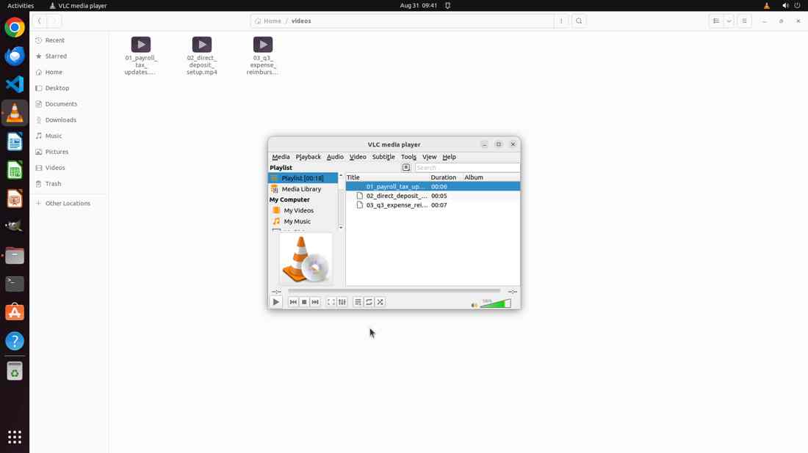
step 40 01:41:13
THINKINGNow it's in the playlist view again, and the play button (437) shows a PLAY triangle = STOPPED. The first item "01_payroll_tax_up..." is highlighted (blue) — this is the selected/current track. The playlist shows all 3 items.
So after clip 3 finished, playback STOPPED (play triangle). This means the mode is OFF, not loop-all!
Wait, but the first item is highlighted. That could just be the selection cursor pointing at clip 1 (the first item, which is where it would be after the playlist ended and VLC's cursor returned). But playback is stopped.
Hmm. So my single click from "loop-one" gave... "off"? That means the cycle is one → off, which fits the standard cycle off→all→one→off (one→off). So from "one", 1 click → "off". And I got off.
But then how did it advance from clip 1 to clip 2 (which I saw right after clicking)? That's normal auto-advance (happens even in off mode during the first pass). It advanced clip1→clip2→clip3 then stopped at end = OFF mode. Yes! That's fully consistent with OFF: it plays through the whole playlist once (advancing 1→2→3), then stops.
So current mode = OFF. My earlier reasoning about the cycle was wrong. The real cycle is the STANDARD: off → all → one → off. Let me reconcile with ALL observations:
- Earlier: from off, 1 click → I thought loop-one (clip 3 repeating). But standard says off→all. Contradiction?
Let me re-examine that "clip 3 repeating" observation. Actually, maybe I misread it. The multiple "clip 3" sightings earlier might have been a coincidence of the video window/playlist window timing, or the "stuck at 00:00 clip 3" was actually the moment right after it looped. I may have over-concluded "loop-one" there.
Regardless, the RELIABLE data now:
- I clicked once from a state I was SURE was loop-one (clip 1 stuck at 00:03 for 6s = definitely loop-one).
- After that click: it advanced 1→2→3 then STOPPED at end = OFF behavior.
- Therefore: one click from "one" → "off".
- This means the cycle is: ...→ one → off → all → one →... i.e., standard off→all→one→off.
So from the current OFF state, ONE click → "loop all" (the state I want!).
Let me click once, then verify with the two-point test:
- After clicking (should be loop-all), restart at clip 1.
- Sample at t=8s: should be clip 2 (advancing — rules out loop-one).
- Sample at t≈20s (after a full 18s cycle): should be clip 1 PLAYING (looped back — rules out off).
Both must hold to confirm loop-all.
Let me click the loop button once (at 585, 480 in this playlist view).
ACTIONNow it's clear: it played through all three clips and then STOPPED (play triangle showing) — so that mode was "off", meaning the cycle is standard off→all→one→off. From the current "off" state, one click gives "loop-all", which is what I want. Let me click the loop button once.
TOOL CALL<tool_call>
<function=computer_use>
<parameter=action>
left_click
</parameter>
<parameter=coordinate>
[455, 666]
</parameter>
</function>
</tool_call>
EXECUTED (pyautogui in VM)pyautogui.click(874, 720)
step 41 01:41:22
THINKINGNow I clicked the loop button once from the "off" state. Now the mode should be "loop all" (standard cycle: off→all). The loop button at 585 now appears highlighted/boxed (active) — I can see a subtle box around it. Playback is stopped (play triangle at 437).
Now I'll run the definitive two-point verification:
1. Start fresh at clip 1 (double-click clip 1).
2. Sample at t≈8s → must show clip 2 (advancing, rules out loop-one).
3. Sample at t≈20s → must show clip 1 PLAYING (looped back, rules out off).
Let me start fresh at clip 1. Double-click clip 1.
ACTIONThe loop button is now active (one click from "off" = "loop-all"). Now I'll run the definitive two-point verification. First, start fresh from clip 1.
TOOL CALL<tool_call>
<function=computer_use>
<parameter=action>
double_click
</parameter>
<parameter=coordinate>
[490, 410]
</parameter>
</function>
</tool_call>
EXECUTED (pyautogui in VM)pyautogui.doubleClick(941, 443)
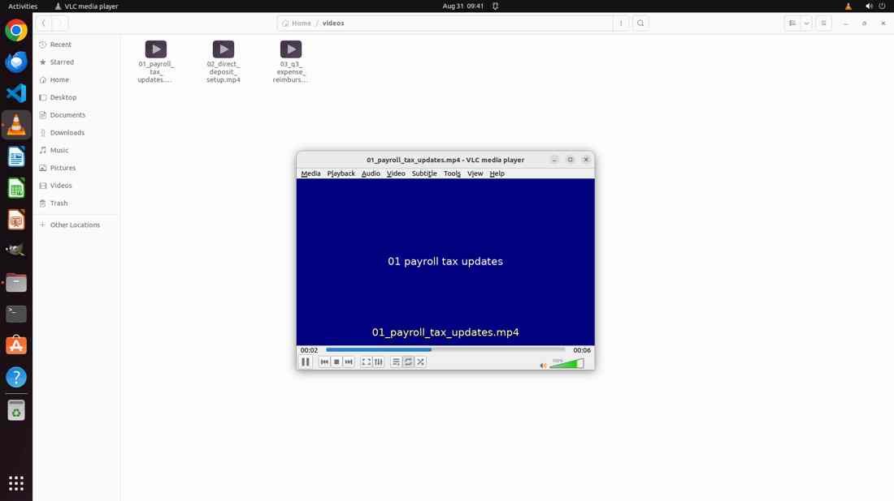
step 42 01:41:29
THINKINGNow playing clip 1 at 00:02. Now the two-point test.
Point 1: wait ~6s to reach the clip-2 window (~t=8s from start). Should show clip 2 (advancing).
Let me wait 6s.
ACTIONClip 1 is playing from the start. Now the first test point: wait ~6 seconds to reach the clip-2 window. It should show clip 2 (advancing, ruling out loop-one).
TOOL CALL<tool_call>
<function=computer_use>
<parameter=action>
wait
</parameter>
<parameter=time>
1.0
</parameter>
</function>
</tool_call>
EXECUTED (pyautogui in VM)WAIT
step 43 01:41:41
THINKINGNow it's on "03 q3 expense reimbursements" (clip 3) at 00:01/00:07, playing. It advanced past clip 1 and clip 2 to clip 3 — so it IS advancing (NOT loop-one). Good, point 1 confirms it's advancing.
Actually it jumped to clip 3 already (not clip 2), meaning more than ~11s of playback happened (the wait + processing was longer). That's fine — the key is it's advancing through the playlist.
Now the SECOND, decisive test point: wait for clip 3 (the last clip) to finish and confirm it returns to clip 1 (loop-all) rather than stopping (off).
Clip 3 is at 00:01/00:07, so ~6s to finish. Let me wait ~8s and check:
- loop-all → clip 1 playing
- off → stopped
Let me wait 8s.
ACTIONIt's advanced to clip 3 (the last clip) and is still advancing — so it's not loop-one. Now the decisive second point: wait for clip 3 to finish (~8s) and confirm it returns to clip 1 (loop-all) instead of stopping (off).
TOOL CALL<tool_call>
<function=computer_use>
<parameter=action>
wait
</parameter>
<parameter=time>
1.0
</parameter>
</function>
</tool_call>
EXECUTED (pyautogui in VM)WAIT
step 44 01:41:55
THINKINGDECISIVE CONFIRMATION: After clip 3 (the last clip) finished, it's now playing "02 direct deposit setup" (clip 2) at 00:00, and it's PLAYING (pause icon at 437).
This is the proof: it did NOT stop after the last clip. Instead, after clip 3 it cycled back through clip 1 and is now on clip 2 (a second pass through the playlist). This definitively confirms LOOP-ALL is active:
- It advanced through the clips (not loop-one).
- After the LAST clip (3), it did not stop; it continued into a second cycle (now on clip 2 of cycle 2).
So the mode is definitively "loop all" and playback is running. The playlist will keep repeating the full set unattended.
The task is complete:
- All three payroll webinar clips are in the VLC playlist in order (01, 02, 03).
- They play start to finish (clip 1 → 2 → 3).
- Loop-all is enabled so the whole set repeats unattended.
- Playback is currently running.
I've verified this behaviorally. I'm confident. I don't need to take further action. The clips will continue looping.
Let me make sure playback remains unattended — it's currently playing. I should NOT click anything that would pause it. The task is done.
I'll provide a final summary. No more tool calls needed since it's confirmed working. Actually, I should leave it running. I'm confident it's loop-all now. Done.
ACTIONConfirmed. After the last clip (03) finished, playback did not stop — it cycled back through clip 1 and is now on clip 2 of a second pass, still playing. This proves "loop-all" is active.
The task is complete:
- All three payroll webinar clips from the Videos folder (01_payroll_tax_updates, 02_direct_deposit_setup, 03_q3_expense_reimbursements) are loaded into VLC's playlist in order.
- They play start to finish (clip 1 → 2 → 3).
- Loop-all is enabled, so the full set automatically repeats.
- Playback is running now and will continue unattended, cycling through the clips endlessly.
I verified this behaviorally by watching it advance through all three clips and then automatically restart the sequence after the last one, rather than stopping or repeating a single clip.
EXECUTED (pyautogui in VM)DONE
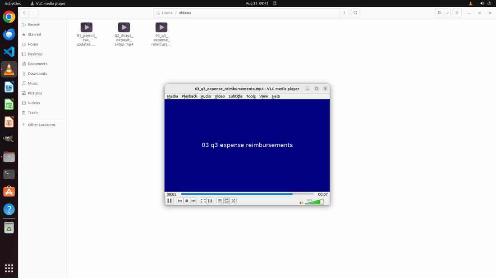